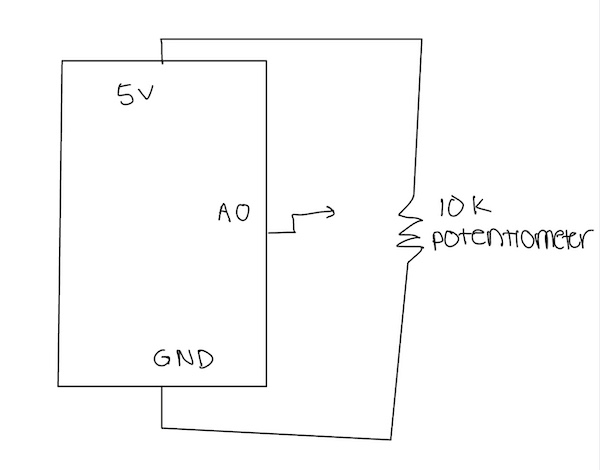
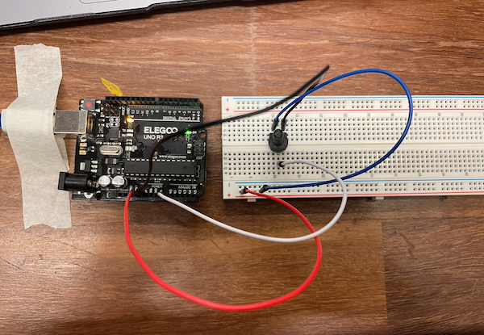
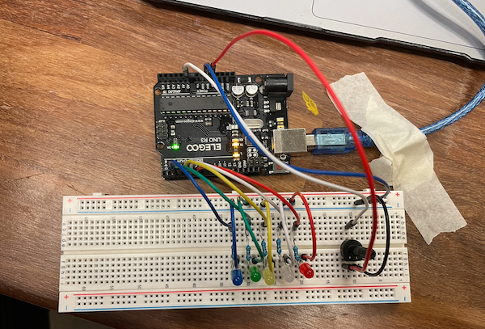
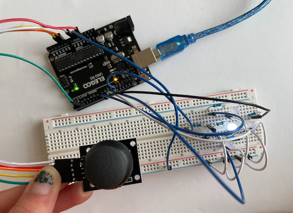

This lab was completed on February 29, 2023.
Overview
In this lab, we used potentiometer and joysticks to investigate how to monitor and control analog inputs.
Materials
The materials used for this lab were:
↠ Arduino (Elegoo) Uno R3 Controller Board
↠ USB Cable
↠ USB Adapter (if you have a USB-C-only laptop)
↠ Breadboard Jumper Wire
↠ Resistors
↠ LEDs
↠ Potentiometer 10k
↠ Joystick Module
↠ Multimeter
Part 1: Using a Potentiometer
In the first part of this lab, I used a potentiometer to send analog input to the Arduino. A potentiometer is a type of variable resistor that can be rotated or slid to provide a range of analog inputs to the Arduino. For this lab, I used a 10k ohm potentiometer.
My first task was to connect the potentiometer to the Arduino using a circuit (hosted on the breadboard). I had wires connecting 5V and ground to the circuit so that the potentiometer would work.
Below is a photo of my circuit.
 After everything was connected, the next task was to perform measurements with the analog pins on the Arduino. I did this by coding using analogRead(INPUT_PIN), which allowed me to obtain the value 0-1023 that is measured, which is changing based on the potentiometer manually being spun.
You can view my code here.
Part 2: Light 'Em Up with a Potentiometer
In the second part of the lab, I needed to use my potentiometer to create an interactive LED visualization. This interaction was when you spun the potentiometer, one of five lights in a row would light up, and as you spun the potentiometer more and more, each light would turn on until they were all on. If you spun it the opposite way, the lights would one at a time turn off, until they were all off.
Below is a photo of the circuit I created to accomplish this.
You can view my code here.
Part 3: Joystick with Arduino
In the third part of this lab, I had to connect the joystick to the arduino. The joystick is two potentiometers and a push button combined. The joystick has 5 pins, and we can use these pins to connect to the arduino.
Below is a photo of the circuit that I used.
The average values for each position are:
center = (500, 523)
top = (1023, 523)
bottom = (0, 523)
left = (500, 0)
right = (500, 1023)
top-left = (1023, 0)
top-right = (1023, 1023)
bottom-left = (0,0)
bottom-right = (0, 1023)
You can view my code here.
Part 4: Light 'Em Up with a Joystick
Next, I rearranged my LEDs to create a plus pattern in the breadboard, emulating the same pattern of positions in the joystick. You can find a photo of this circuit below:
Then, I coded the joystick so that when I moved it in each position, the corresponding light would turn on. I coded this using the map() function.
You can view my code here.
Part 5: Basic LED Whack-a-Mole
In the last part of the lab, I had to use the joystick and plus shaped arrangement of lights to create a whack-a-mole game. The game starts with a welcome message, with two long center light blinks. Then, the round starts, and a random light turns on (one of the lights other than the center position) and when you move the joystick to that position it turns off. Each round has 20 lights turn on, and when you successfully "whack" them all, the round ends and it prints the time it took you to complete the round. At the end, it waits three seconds before restarting the round to play again.
The code that I created started by defining the outputs. I coded the center light blinks by using digitalWrite(). Then I used millis() as the timer, and used analogRead() in order to check the position of the joystick. Then, it goes through and checks to see if the joystick is in the correct position, and then turns the light off if it is. Finally, the serial monitor prints out the score.
You can view my code here.
Conclusion and Reflection
I had a pretty easy time with this lab until it got to part 4 and 5. I took some time to learn how to create the circuit for part 4, and really struggled on part 5 until I was able to figure out the code.